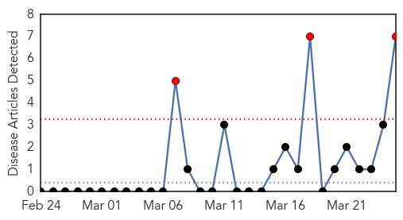

30 Day Trends
Web: 3 alerts, 0 warnings
Twitter: 0 alerts, 0 warnings
Top Articles:
- 1.000
- Mumps outbreak at Ohio State spreads: What you need to know
- 0.998
- Ohio State Mumps Outbreak Spreads Off Campus into Community
- 0.997
- Mumps Ohio Outbreak Spreading to Other States
- 0.989
- Ohio mumps outbreak at 63 cases, spreads beyond university
- 0.977
- Mumps may have spread to Delaware County; residents urged to take precautions
- 0.932
- Mumps outbreak spreads beyond Ohio State campus to at least 69 cases
- 0.749
- VIDEO: Mumps outbreak extends beyond Ohio State campus
Top Tweets:
-
No tweets found for Mar 25, 2014
Web/News Articles
Tweets